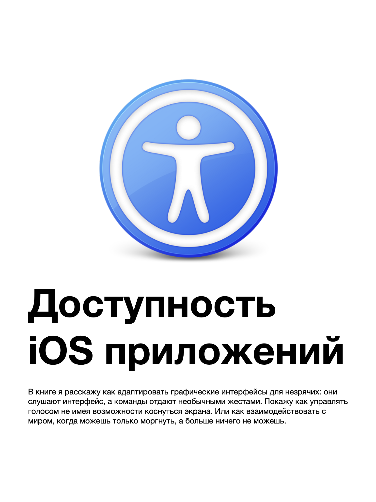
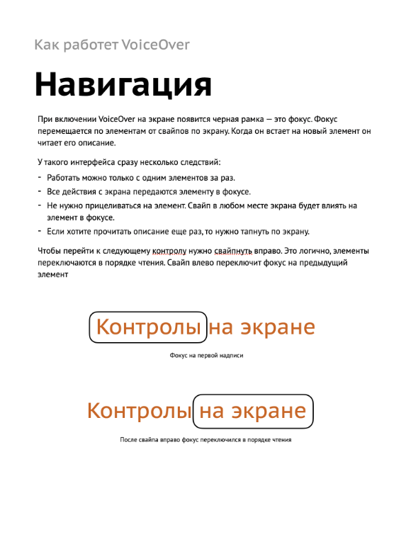
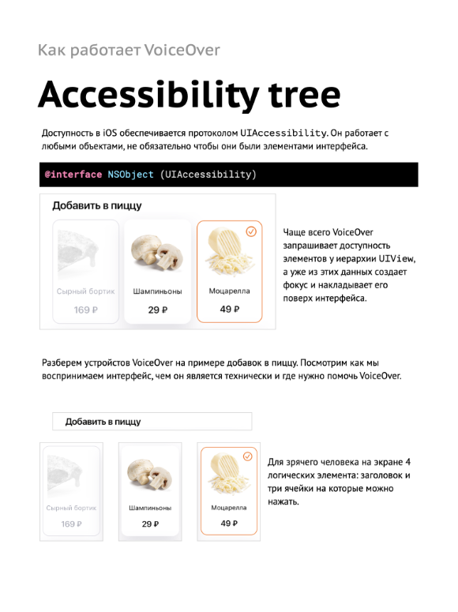
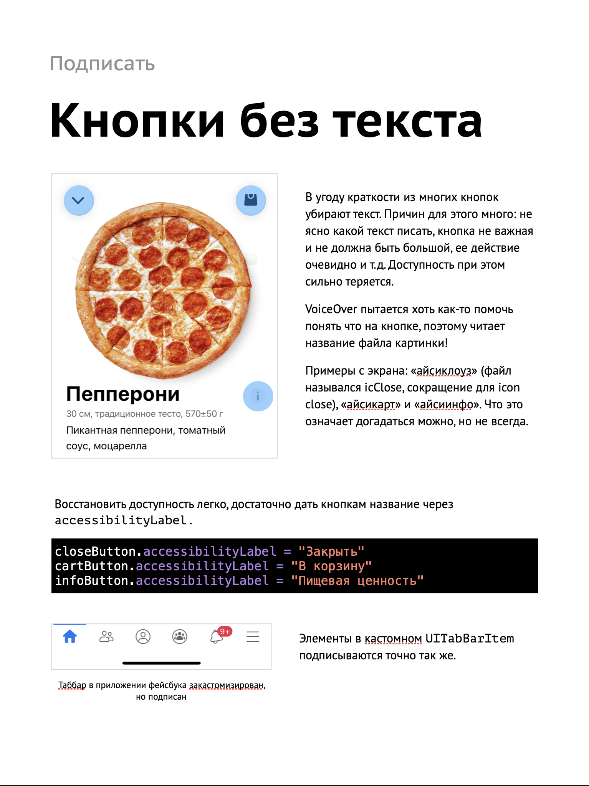
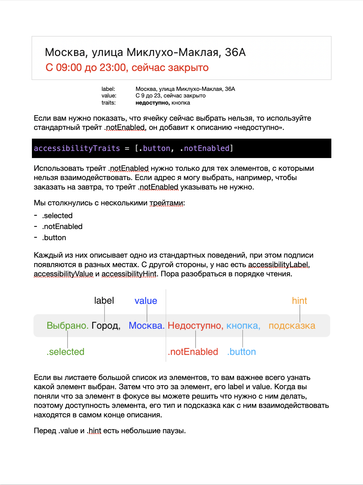
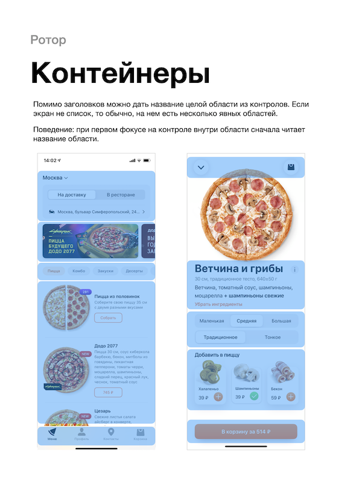
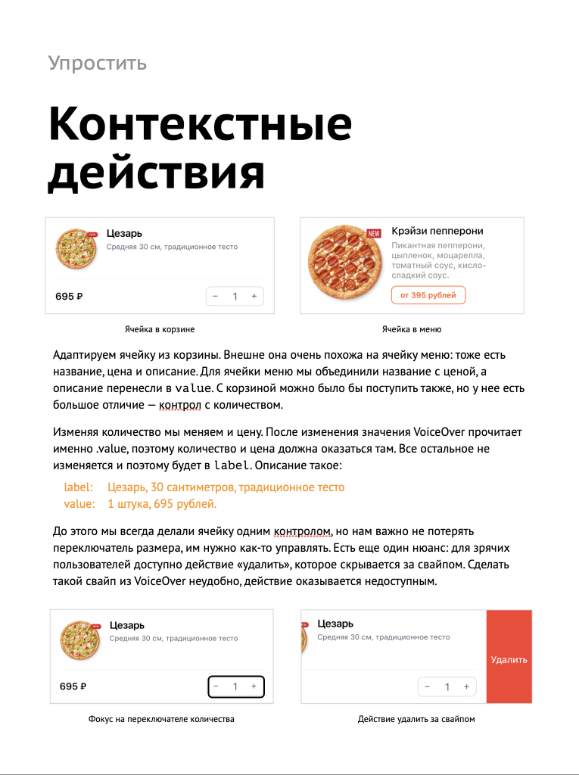
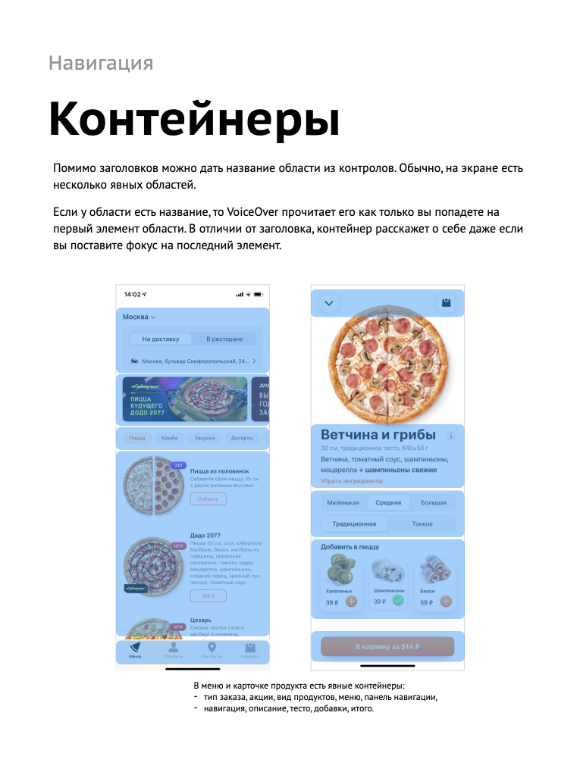
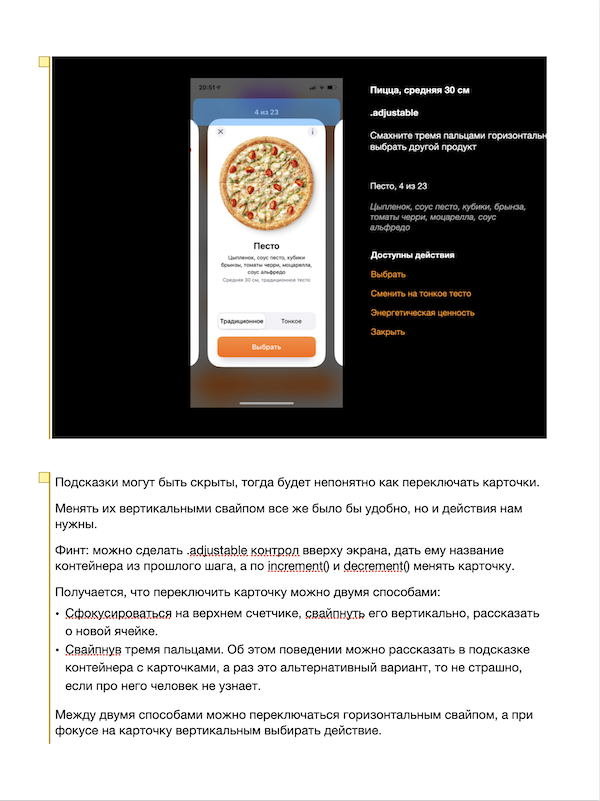
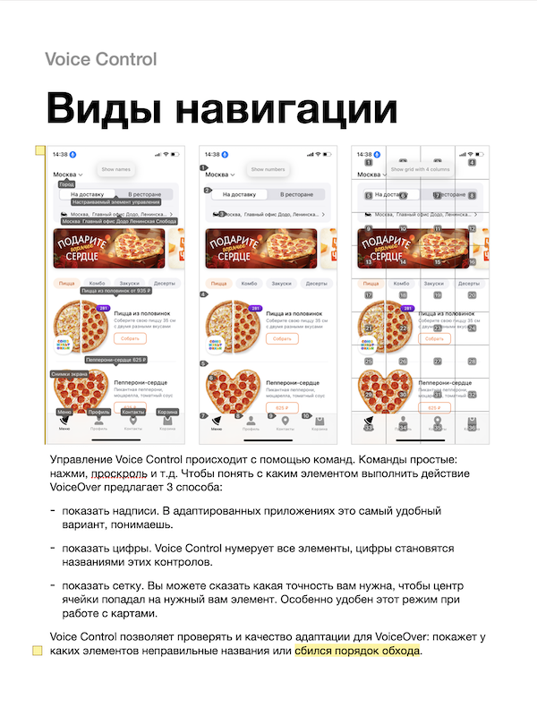

Я узнал, что приложения легко адаптировать для незрячих, но не понял как. Начал разбираться, но непонятно все: как люди пользуются телефоном, как ведут себя отдельные контролы, как строить из этого целые сценарии. Я попробовал адаптировать приложение Додо Пиццы, какие-то экраны получилось, на каких-то появились проблему, которые я не понимаю как решить. Документация слабая, статьи в интернете поверхностные, а ведь надо поменять все представление об интерфейсе, он ведь больше не графический!
Я продолжил разбираться и копить материал. Мне удалось поработать с незрячим Арменом, очень многому научился у него. Даже три статьи написал.
Этого все равно было мало: тему удалось раскрыть лишь чуть-чуть, а проблем, которые я не знаю как починить, оставалось еще очень много.
Спустя время Лера Курмак позвала меня провести курс про iOS. Я готовился несколько месяцев, собрал все что знаю, разобрался во всем что не знаю и сделал презентацию из 500 слайдов.
Я всегда писал статьи отталкивая от картинок. Вот у меня их 500 и я не представляю как их донести в другом формате. И тут Максим Ильяхов анонсирует что пишет новую книгу, а заодно и рассказыват как ее написать. Точно, книга — то что мне нужно.
После курса я переделал презентацию в книгу и вот мы здесь.
Книга «Рецепты доступных приложений: VoiceOver, Voice Control и Switch Control»
Наверно, вы слышали про VoiceOver, но не знаете как это работает и что с ним делать. Я покажу. Расскажу как люди с разной инвалидностью пользуются приложениями, как проектировать для них, как адаптировать приложения для этого.
Понимаю, что самое сложное — это понять как люди пользуются телефоном, как проектировать для них, чего избежать и как сделать круто. Поэтому подброно разбираю каждый элемент: как его описать, как с ним взаимодействовать, как объединять их и как строить из этого сценарии.
В книге 200 страниц, только в электронном виде. Подойдет всем кто работает с IT: программистам, дизайнерам, продактам, исследователям.

Содержание
Что такое доступность?
Как работает VoiceOver
Как подписывать элементы
Как адаптировать списки
Сложные контролы
Навигация на странице
Ротор
Навигация между страницами
Разное
Набор текста
Адаптация всего приложения
Voice Control
Switch Control
Процессы: дизайн, программирование и тестирование
SwiftUI
Начнем с того как незрячие работают с телефоном, разберем устройство VoiceOver, научимся подписывать элементы и правильно выбирать их тип. Затем повысим информативность: контролов станет меньше, а пользы больше.
Разобравшись с экраном займемся навигацией: сначала внутри экрана, а затем и между ними. Расскажу какие паттеры и жесты есть для этого. Закопаемся в сложные случаи: научимся работать с текстовыми полями, посмотрим на клавиатуру Брайля, разберемся как работать с ошибками и тактильным фидбеком
Разобравшись с экраном займемся навигацией: сначала внутри экрана, а затем и между ними. Расскажу какие паттеры и жесты есть для этого. Закопаемся в сложные случаи: научимся работать с текстовыми полями, посмотрим на клавиатуру Брайля, разберемся как работать с ошибками и тактильным фидбеком
В конце прохожусь по всему приложению Додо Пиццы и рассказываю про каждый экран: вы сможете не только прочитать, но и посмотреть это в действии в приложении.
Не обойдем стороной и SwiftUI: Apple проделала большую работу чтобы упростить адаптацию приложений, посмотрим как это влияет на код.









Демо-глава
Очень хочу, чтобы как можно больше разработчиков адапаптировали свои приложения для всех, поэтому даю бесплатно прочитать демо-версию книги: все вступление и первые, самые важные главы: научитесь подписывать элементы и группировать их. Если понравится, то приходите за полной версией, узнаете про все нюансы, проблемы и решения для них.
Будет ли что-то про андроид? Нет, но почитать можно, принципы работы с ментальной моделью совпадают.
Будет ли в печатном виде? Пока никаих планов на бумажную версию, электронную делать в сто раз проще и быстрее.
Будет платной? Да, бесплатные книги мало кто читает.
Курс про доступность
Мы проводим целый курс про доступность: незрячие рассказывают о своем опыте, показывают сценарии использования и рассказывают о повседевных проблемах. Исследователи учатся исследовать, дизайнеры дизайнить и программисты программировать, но уже доступные продукты. Учим вебу и iOS.
Курс подойдет как тем кто только знакомится с доступностью, так и тем, кто уже много знает, но хотел бы все систематизировать, набраться опыта и обсудить сложные вопросы.